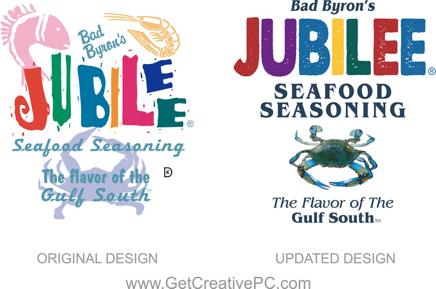
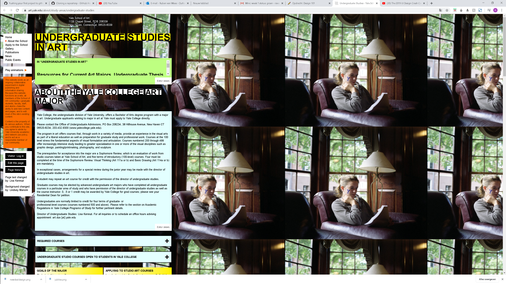

Review van design 1: Jubilee
- Contrast: Het contrast is verbeterd, waardoor de leesbaarheid vergroot is.
- Consistency: Consistente text-spacing waardoor het meer één geheel wordt.
- Whitespace: Aan alle kanten goed behalve de bovenkant, daar ontbreekt de whitespacing.
- Visual Hierarchy: Het is goed te zien in de hierarchie welk element het meest belangrijk is.
- Simplicity: Bij de update is het versimpeld door de extra kreeften in verschillende kleuren weg te laten, dit zorgt voor een beter geheel.
- Scale: De scale is correct, de titel is het grootste en vervolgens lees je van groot naar klein de meest belangrijke elementen.
Review van design 2: Ling's Cars
- Contrast: Er is veel te veel contrast, waardoor de kijker geen idee heeft waar hij naar moet kijken.
- Consistency: Het is een consistent design. Alle elementen hebben dezelfde opmaak.
- Whitespace: Praktisch geen whitespacing waardoor de site zeer onleesbaar wordt.
- Visual Hierarchy: Het is niet goed te zien in de hierarchie welk element het meest belangrijk is.
- Simplicity: Qua vormgeving is dit een zeer complexe website, veel verschillende kleuren en elementen.
- Scale: De scale is niet correct, het maakt het zeer onduidelijk welk element nou het belangrijkst is. .
Review van design 3: New Deal Agency
- Contrast: Het contrast is te laag waardoor niet goed duidelijk te lezen is wat er staat.
- Consistency: Consistente text spacing en kleurgebruik.
- Whitespace: Text goed gecentreerd en van elkaar gespaced.
- Visual Hierarchy: Het is niet goed te zien in de hierarchie welk element het meest belangrijk is.
- Simplicity: Het design is simpel gehouden, wat bij een beter gebruik van contrast voor een positief effect zorgt.
- Scale: De elementen zijn wat klein, waardoor de leesbaarheid ook minder wordt.

Review van design 4: Yale School of Art
- Contrast: Door de afbeelding als achtergrond is het contrast inconsistent waardoor de leesbaarheid afneemt.
- Consistency: Inconsistente opmaak, waardoor het niet als één geheel oogt.
- Whitespace: Geen goed gebruik van whitespacing, dit verschilt per element.
- Visual Hierarchy: Het is niet goed te zien in de hierarchie welk element het meest belangrijk is.
- Simplicity: Het design is te complex qua opmaak met dingen als gradients die de kwaliteit verlagen.
- Scale: De scale is incorrect, sommige elementen veel te groot en andere weer veel te klein.